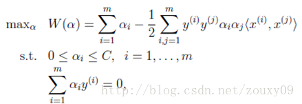
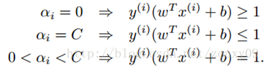
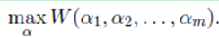
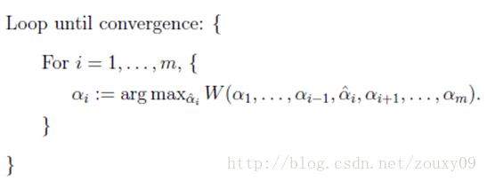
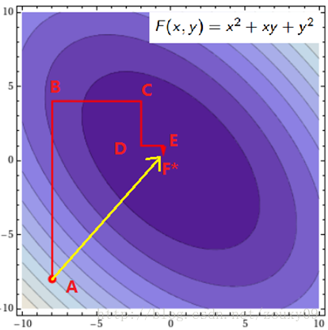
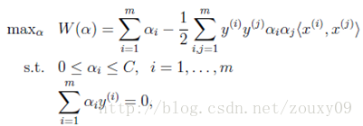
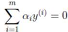
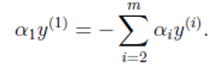
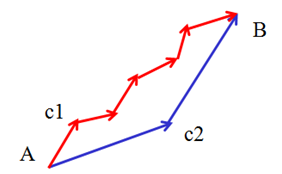
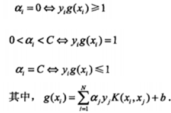

支持向量机是一个用于二分类的非线性分类器
支持向量机首先是一种二分类模型，它的基本思想是找到线性空间中的一个超平面，可以将两类别正确分离并使几何间隔最大。当然能线性正确分隔的数据集毕竟很少，如果数据集线性不可分，即存在特异点，除去这些特异点后，数据集是线性可分的，则可以引入松弛变量和惩罚因子，使得分离间隔尽量大的同时误分类的点数目尽量少。对于非线性的分类问题，可以利用核技巧的方法，将数据集映射到高维空间中，在高维空间中训练数据集，找到能使分离间隔较大并且误分类点较少的超平面，这种方法叫做非线性支持向量机。支持向量机中对分离超平面的求解可以形式化为凸优化问题的求解，下面通过调用R语言中e1071包中的函数svm()展示支持向量机。
目录
一、引入
二、线性可分SVM与硬间隔最大化
三、Dual优化问题
3.1、对偶问题
3.2、SVM优化的对偶问题
四、松弛向量与软间隔最大化
五、核函数
六、多类分类之SVM
6.1、“一对多”的方法
6.2、“一对一”的方法
七、KKT条件分析
八、SVM的实现之SMO算法
8.1、坐标下降算法
8.2、SMO算法原理
8.3、SMO算法的Python实现
九、参考文献与推荐阅读
。那么神奇和有效的东西还得回归到实现才可以展示其强大的功力。SVM有效而且存在很高效的训练算法，这也是工业界非常青睐SVM的原因。
前面讲到，SVM的学习问题可以转化为下面的对偶问题：
需要满足的KKT条件：
也就是说找到一组αi可以满足上面的这些条件的就是该目标的一个最优解。所以我们的优化目标是找到一组最优的αi*。一旦求出这些αi*，就很容易计算出权重向量w*和b，并得到分隔超平面了。
这是个凸二次规划问题，它具有全局最优解，一般可以通过现有的工具来优化。但当训练样本非常多的时候，这些优化算法往往非常耗时低效，以致无法使用。从SVM提出到现在，也出现了很多优化训练的方法。其中，非常出名的一个是1982年由Microsoft Research的John C. Platt在论文《Sequential Minimal Optimization: A Fast Algorithm for TrainingSupport Vector Machines》中提出的Sequential Minimal Optimization序列最小化优化算法，简称SMO算法。SMO算法的思想很简单，它将大优化的问题分解成多个小优化的问题。这些小问题往往比较容易求解，并且对他们进行顺序求解的结果与将他们作为整体来求解的结果完全一致。在结果完全一致的同时，SMO的求解时间短很多。在深入SMO算法之前，我们先来了解下坐标下降这个算法，SMO其实基于这种简单的思想的。
1、坐标下降（上升）法
假设要求解下面的优化问题：
在这里，我们需要求解m个变量αi，一般来说是通过梯度下降（这里是求最大值，所以应该叫上升）等算法每一次迭代对所有m个变量αi也就是α向量进行一次性优化。通过误差每次迭代调整α向量中每个元素的值。而坐标上升法（坐标上升与坐标下降可以看做是一对，坐标上升是用来求解max最优化问题，坐标下降用于求min最优化问题）的思想是每次迭代只调整一个变量αi的值，其他变量的值在这次迭代中固定不变。
最里面语句的意思是固定除αi之外的所有αj(i不等于j)，这时W可看作只是关于αi的函数，那么直接对αi求导优化即可。这里我们进行最大化求导的顺序i是从1到m，可以通过更改优化顺序来使W能够更快地增加并收敛。如果W在内循环中能够很快地达到最优，那么坐标上升法会是一个很高效的求极值方法。
用个二维的例子来说明下坐标下降法：我们需要寻找f(x,y)=x2+xy+y2的最小值处的(x*, y*)，也就是下图的F*点的地方。
假设我们初始的点是A（图是函数投影到xoy平面的等高线图，颜色越深值越小），我们需要达到F*的地方。那最快的方法就是图中黄色线的路径，一次性就到达了，其实这个是牛顿优化法，但如果是高维的话，这个方法就不太高效了（因为需要求解矩阵的逆，这个不在这里讨论）。我们也可以按照红色所指示的路径来走。从A开始，先固定x，沿着y轴往让f(x, y)值减小的方向走到B点，然后固定y，沿着x轴往让f(x, y)值减小的方向走到C点，不断循环，直到到达F*。反正每次只要我们都往让f(x, y)值小的地方走就行了，这样脚踏实地，一步步走，每一步都使f(x, y)慢慢变小，总有一天，皇天不负有心人的。到达F*也是时间问题。到这里你可能会说，这红色线比黄色线贫富差距也太严重了吧。因为这里是二维的简单的情况嘛。如果是高维的情况，而且目标函数很复杂的话，再加上样本集很多，那么在梯度下降中，目标函数对所有αi求梯度或者在牛顿法中对矩阵求逆，都是很耗时的。这时候，如果W只对单个αi优化很快的时候，坐标下降法可能会更加高效。
SMO算法的思想和坐标下降法的思想差不多。唯一不同的是，SMO是一次迭代优化两个α而不是一个。为什么要优化两个呢？
我们回到这个优化问题。我们可以看到这个优化问题存在着一个约束，也就是
假设我们首先固定除α1以外的所有参数，然后在α1上求极值。但需要注意的是，因为如果固定α1以外的所有参数，由上面这个约束条件可以知道，α1将不再是变量（可以由其他值推出），因为问题中规定了：
因此，我们需要一次选取两个参数做优化，比如αi和αj，此时αi可以由αj和其他参数表示出来。这样回代入W中，W就只是关于αj的函数了，这时候就可以只对αj进行优化了。在这里就是对αj进行求导，令导数为0就可以解出这个时候最优的αj了。然后也可以得到αi。这就是一次的迭代过程，一次迭代只调整两个拉格朗日乘子αi和αj。SMO之所以高效就是因为在固定其他参数后，对一个参数优化过程很高效（对一个参数的优化可以通过解析求解，而不是迭代。虽然对一个参数的一次最小优化不可能保证其结果就是所优化的拉格朗日乘子的最终结果，但会使目标函数向极小值迈进一步，这样对所有的乘子做最小优化，直到所有满足KKT条件时，目标函数达到最小）
总结下来是：
重复下面过程直到收敛{
（1）选择两个拉格朗日乘子αi和αj；
（2）固定其他拉格朗日乘子αk(k不等于i和j)，只对αi和αj优化w(α);
（3）根据优化后的αi和αj，更新截距b的值；
}
那训练里面这两三步骤到底是怎么实现的，需要考虑什么呢？下面我们来具体分析下：
我们现在是每次迭代都优化目标函数的两个拉格朗日乘子αi和αj，然后其他的拉格朗日乘子保持固定。如果有N个训练样本，我们就有N个拉格朗日乘子需要优化，但每次我们只挑两个进行优化，我们就有N(N-1)种选择。那到底我们要选择哪对αi和αj呢？选择哪对才好呢？想想我们的目标是什么？我们希望把所有违法KKT条件的样本都纠正回来，因为如果所有样本都满足KKT条件的话，我们的优化就完成了。那就很直观了，哪个害群之马最严重，我们得先对他进行思想教育，让他尽早回归正途。OK，那我们选择的第一个变量αi就选违法KKT条件最严重的那一个。那第二个变量αj怎么选呢？
我们是希望快点找到最优的N个拉格朗日乘子，使得代价函数最大，换句话说，要最快的找到代价函数最大值的地方对应的N个拉格朗日乘子。这样我们的训练时间才会短。就像你从广州去北京，有飞机和绿皮车给你选，你选啥？（就算你不考虑速度，也得考虑下空姐的感受嘛，别辜负了她们渴望看到你的期盼，哈哈）。有点离题了，anyway，每次迭代中，哪对αi和αj可以让我更快的达到代价函数值最大的地方，我们就选他们。或者说，走完这一步，选这对αi和αj代价函数值增加的值最多，比选择其他所有αi和αj的结合中都多。这样我们才可以更快的接近代价函数的最大值，也就是达到优化的目标了。再例如，下图，我们要从A点走到B点，按蓝色的路线走c2方向的时候，一跨一大步，按红色的路线走c1方向的时候，只能是人类的一小步。所以，蓝色路线走两步就迈进了成功之门，而红色的路线，人生曲折，好像成功遥遥无期一样，故曰，选择比努力更重要！
真啰嗦！说了半天，其实就一句话：为什么每次迭代都要选择最好的αi和αj，就是为了更快的收敛！那实践中每次迭代到底要怎样选αi和αj呢？这有个很好听的名字叫启发式选择，主要思想是先选择最有可能需要优化（也就是违反KKT条件最严重）的αi，再针对这样的αi选择最有可能取得较大修正步长的αj。具体是以下两个过程：
1）第一个变量αi的选择：
SMO称选择第一个变量的过程为外层循环。外层训练在训练样本中选取违法KKT条件最严重的样本点。并将其对应的变量作为第一个变量。具体的，检验训练样本(xi, yi)是否满足KKT条件，也就是：
 该检验是在ε范围内进行的。在检验过程中，外层循环首先遍历所有满足条件0<αj 优先选择遍历非边界数据样本，因为非边界数据样本更有可能需要调整，边界数据样本常常不能得到进一步调整而留在边界上。由于大部分数据样本都很明显不可能是支持向量，因此对应的α乘子一旦取得零值就无需再调整。遍历非边界数据样本并选出他们当中违反KKT 条件为止。当某一次遍历发现没有非边界数据样本得到调整时，遍历所有数据样本，以检验是否整个集合都满足KKT条件。如果整个集合的检验中又有数据样本被进一步进化，则有必要再遍历非边界数据样本。这样，不停地在遍历所有数据样本和遍历非边界数据样本之间切换，直到整个样本集合都满足KKT条件为止。以上用KKT条件对数据样本所做的检验都以达到一定精度ε就可以停止为条件。如果要求十分精确的输出算法，则往往不能很快收敛。 对整个数据集的遍历扫描相当容易，而实现对非边界αi的扫描时，首先需要将所有非边界样本的αi值（也就是满足0<αi 2）第二个变量αj的选择： 在选择第一个αi后，算法会通过一个内循环来选择第二个αj值。因为第二个乘子的迭代步长大致正比于|Ei-Ej|，所以我们需要选择能够最大化|Ei-Ej|的第二个乘子（选择最大化迭代步长的第二个乘子）。在这里，为了节省计算时间，我们建立一个全局的缓存用于保存所有样本的误差值，而不用每次选择的时候就重新计算。我们从中选择使得步长最大或者|Ei-Ej|最大的αj。 选择这两个拉格朗日乘子后，我们需要先计算这些参数的约束值。然后再求解这个约束最大化问题。
首先，我们需要给αj找到边界L<=αj<=H，以保证αj满足0<=αj<=C的约束。这意味着αj必须落入这个盒子中。由于只有两个变量(αi, αj)，约束可以用二维空间中的图形来表示，如下图： 不等式约束使得(αi,αj)在盒子[0, C]x[0, C]内，等式约束使得(αi, αj)在平行于盒子[0, C]x[0, C]的对角线的直线上。因此要求的是目标函数在一条平行于对角线的线段上的最优值。这使得两个变量的最优化问题成为实质的单变量的最优化问题。由图可以得到，αj的上下界可以通过下面的方法得到： 我们优化的时候，αj必须要满足上面这个约束。也就是说上面是αj的可行域。然后我们开始寻找αj，使得目标函数最大化。通过推导得到αj的更新公式如下： 这里Ek可以看做对第k个样本，SVM的输出与期待输出，也就是样本标签的误差。 最后，得到优化的αj后，我们需要用它来计算αi 优化αi和αj后，我们就可以更新阈值b，使得对两个样本i和j都满足KKT条件。如果优化后αi不在边界上（也就是满足0<αi 在代码中已经有了比较详细的注释了。不知道有没有错误的地方，如果有，还望大家指正（每次的运行结果都有可能不同，另外，感觉有些结果似乎不太正确，但我还没发现哪里出错了，如果大家找到有错误的地方，还望大家指点下，衷心感谢）。里面我写了个可视化结果的函数，但只能在二维的数据上面使用。直接贴代码：（2）优化αi和αj：
（3）计算阈值b：
SMO算法的Python实现
#################################################
# SVM: support vector machine
# Author : zouxy
# Date : 2013-12-12
# HomePage : http://blog.csdn.net/zouxy09
# Email : zouxy09@qq.com
#################################################
from numpy import *
import time
import matplotlib.pyplot as plt
# calulate kernel value
def calcKernelValue(matrix_x, sample_x, kernelOption):
kernelType = kernelOption[0]
numSamples = matrix_x.shape[0]
kernelValue = mat(zeros((numSamples, 1)))
if kernelType == 'linear':
kernelValue = matrix_x * sample_x.T
elif kernelType == 'rbf':
sigma = kernelOption[1]
if sigma == 0:
sigma = 1.0
for i in xrange(numSamples):
diff = matrix_x[i, :] - sample_x
kernelValue[i] = exp(diff * diff.T / (-2.0 * sigma**2))
else:
raise NameError('Not support kernel type! You can use linear or rbf!')
return kernelValue
# calculate kernel matrix given train set and kernel type
def calcKernelMatrix(train_x, kernelOption):
numSamples = train_x.shape[0]
kernelMatrix = mat(zeros((numSamples, numSamples)))
for i in xrange(numSamples):
kernelMatrix[:, i] = calcKernelValue(train_x, train_x[i, :], kernelOption)
return kernelMatrix
# define a struct just for storing variables and data
class SVMStruct:
def __init__(self, dataSet, labels, C, toler, kernelOption):
self.train_x = dataSet # each row stands for a sample
self.train_y = labels # corresponding label
self.C = C # slack variable
self.toler = toler # termination condition for iteration
self.numSamples = dataSet.shape[0] # number of samples
self.alphas = mat(zeros((self.numSamples, 1))) # Lagrange factors for all samples
self.b = 0
self.errorCache = mat(zeros((self.numSamples, 2)))
self.kernelOpt = kernelOption
self.kernelMat = calcKernelMatrix(self.train_x, self.kernelOpt)
# calculate the error for alpha k
def calcError(svm, alpha_k):
output_k = float(multiply(svm.alphas, svm.train_y).T * svm.kernelMat[:, alpha_k] + svm.b)
error_k = output_k - float(svm.train_y[alpha_k])
return error_k
# update the error cache for alpha k after optimize alpha k
def updateError(svm, alpha_k):
error = calcError(svm, alpha_k)
svm.errorCache[alpha_k] = [1, error]
# select alpha j which has the biggest step
def selectAlpha_j(svm, alpha_i, error_i):
svm.errorCache[alpha_i] = [1, error_i] # mark as valid(has been optimized)
candidateAlphaList = nonzero(svm.errorCache[:, 0].A)[0] # mat.A return array
maxStep = 0; alpha_j = 0; error_j = 0
# find the alpha with max iterative step
if len(candidateAlphaList) > 1:
for alpha_k in candidateAlphaList:
if alpha_k == alpha_i:
continue
error_k = calcError(svm, alpha_k)
if abs(error_k - error_i) > maxStep:
maxStep = abs(error_k - error_i)
alpha_j = alpha_k
error_j = error_k
# if came in this loop first time, we select alpha j randomly
else:
alpha_j = alpha_i
while alpha_j == alpha_i:
alpha_j = int(random.uniform(0, svm.numSamples))
error_j = calcError(svm, alpha_j)
return alpha_j, error_j
# the inner loop for optimizing alpha i and alpha j
def innerLoop(svm, alpha_i):
error_i = calcError(svm, alpha_i)
### check and pick up the alpha who violates the KKT condition
## satisfy KKT condition
# 1) yi*f(i) >= 1 and alpha == 0 (outside the boundary)
# 2) yi*f(i) == 1 and 0